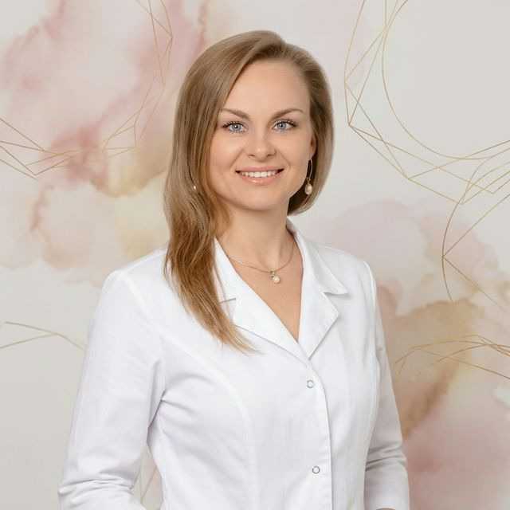

Комплексное медицинское и психологическое сопровождение беременности от врача с 24-летним стажем. Индивидуальный подход, доказательная медицина и забота на каждом этапе.

Уникальное сочетание клинического опыта акушера-гинеколога, эксперта УЗ-диагностики и сертифицированного коуча ICF позволяет обеспечить комплексное медико-психологическое сопровождение.
Четыре ключевых направления работы — от планирования до восстановления после родов
Комплексная подготовка пары: обследования, анализы, коррекция здоровья и психологическая готовность к родительству.
Подробнее →Персональное сопровождение на протяжении всей беременности: консультации, мониторинг, расшифровка анализов.
Подробнее →Медицинская и эмоциональная поддержка в послеродовом периоде: восстановление, грудное вскармливание, забота о себе.
Подробнее →Работа со страхами, убеждениями и сомнениями через коучинговые технологии. Партнёрские отношения и семейные ценности.
Подробнее →Статьи и рекомендации по вопросам женского здоровья и подготовки к материнству
Ответы на популярные вопросы по ведению беременности, планированию и послеродовому сопровождению
Да, доктор Дубенец-Попова проводит онлайн-сопровождение беременности: видеоконсультации, расшифровка анализов и УЗИ, мониторинг состояния. Это удобно для женщин из любого города России. Очные приёмы доступны в Москве.
При планировании беременности рекомендуется: общий и биохимический анализ крови, анализы на инфекции (TORCH-комплекс), гормональный профиль, коагулограмма, УЗИ органов малого таза, спермограмма партнёра. Доктор Дубенец-Попова назначает индивидуальный план обследования с учётом анамнеза.
Стоимость ведения беременности зависит от выбранной программы и формата сопровождения — онлайн или очно в Москве. Для уточнения стоимости оставьте заявку через форму на сайте или напишите в Telegram — доктор подберёт индивидуальную программу.
Семейный коучинг — это работа с партнёрскими отношениями в семье, страхами перед родительством, ожиданиями от беременности и материнства. Доктор Дубенец-Попова — сертифицированный коуч по семейным отношениям PCC ICF, сочетающий медицинскую экспертизу с коучинговыми технологиями.
Для записи на онлайн-консультацию гинеколога оставьте заявку через форму на сайте или напишите в Telegram @ginecologicc. Консультация проводится по видеосвязи в удобное время. Доступна беременность поддержка онлайн из любого региона.
Послеродовая депрессия — распространённое состояние, которое переживают до 20% женщин в послеродовом периоде. Доктор Дубенец-Попова оказывает комплексное послеродовое сопровождение, включая медицинскую и психологическую поддержку. Важно вовремя обратиться за профессиональной помощью — вы не одна.
При очном ведении беременности в Москве доктор проводит осмотры и УЗИ лично. При онлайн-формате — регулярные видеоконсультации, расшифровка результатов обследований, ответы на вопросы 24/7, рекомендации по каждому этапу. Оба формата включают персональное психологическое сопровождение.
Присоединяйтесь к Telegram-каналу для полезных материалов или оставьте заявку на консультацию